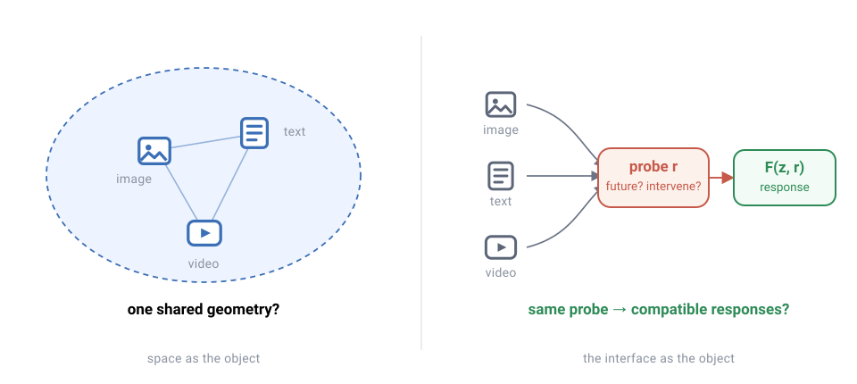
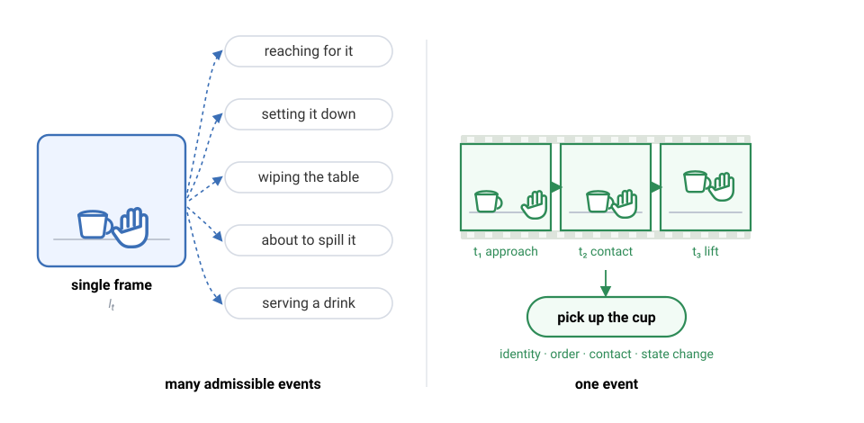
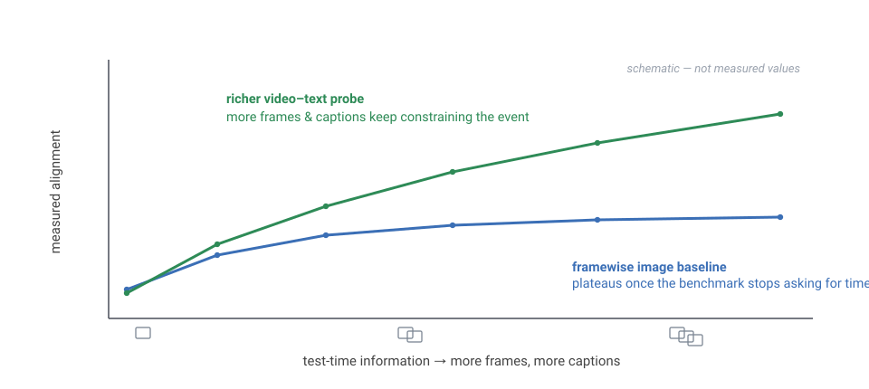
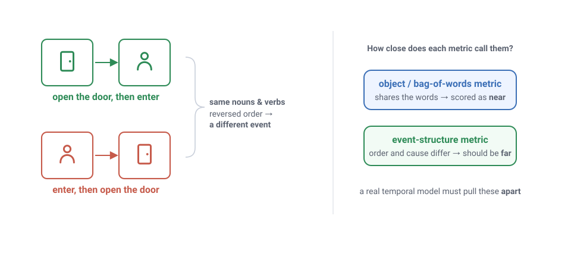
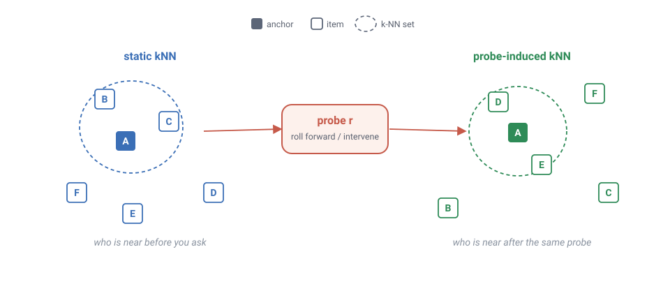
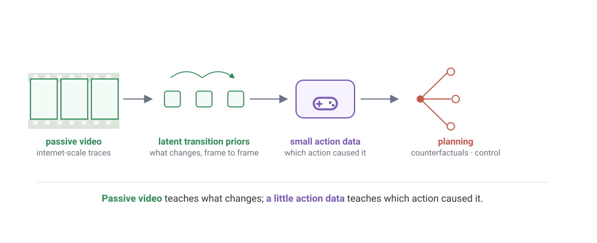

Representations do not need to agree on what the world is.
They need to agree on which changes are possible, which changes are impossible,
and which changes would follow from intervention.
Freeze a video on one frame: a hand, a cup, a table. What is happening? The
hand could be reaching for the cup, setting it down, wiping the table, or about
to knock it over. The frame cannot say. Play three more frames and the
ambiguity collapses to a single answer — even though nothing was added to
the scene. The objects are identical. What changed is that time ruled out the
other stories.
That gap, between what a snapshot shows and what a sequence commits to, is the
whole argument of this blog. What follows is not a theorem or a finished
theory, but a research stance on what visual intelligence, video
representations, and world models should actually be aligned to.
The central question is simple:
Should visual intelligence be built around static representation alignment, or
around predictive compatibility with the world?
My position is the latter.
The modern representation learning community has been drawn to a beautiful
idea: perhaps sufficiently large models, trained on sufficiently diverse data
and modalities, converge toward a shared representation of reality. Vision
models, language models, audio models, video models, 3D models, and perhaps
even brains may all be different projections of the same underlying world.
With enough scale, maybe they begin to discover the same structure.
This is the spirit of the
Platonic
Representation Hypothesis: neural networks may be converging toward a
shared statistical model of reality, with growing alignment between
representation spaces across architectures and modalities.
Personally, I am a big fan of the Platonic Representation Hypothesis — it
is one of my favorite recent ideas in representation learning. I also think its
strongest version aims at the wrong object.
The problem is not that different modalities observe different realities. The
problem is that different modalities preserve different invariances, expose
different variables, and discard different information. Vision preserves pose,
texture, lighting, occlusion, material cues, viewpoint, shape, and spatial
relations. Language collapses many of these details into sparse event
descriptions. Touch reveals friction, compliance, temperature, and contact.
Video adds temporal order, persistence, contact, and state change. Action
exposes controllability.
Each modality is not a noisy copy of a single canonical representation.
Each modality is an interface to the world.
This means that static alignment may be the wrong target. We should not ask
only whether a vision embedding and a language embedding occupy the same global
representation space. We should ask whether they support compatible
predictions about the same world.
In other words:
Visual general intelligence may not emerge from aligning what modalities
are.
It may emerge from aligning how they change.
Plato, if anywhere, is not in the embedding space. Plato is in the transition.

Figure 1. Not a space, but an interface. Static alignment
treats the shared object as an embedding geometry. Predictive compatibility
treats the shared object as a family of responses to probes: future
prediction, temporal order, spatial query, counterfactual, or intervention.
1. The appeal of static Platonism
The Platonic Representation Hypothesis gives us a clean picture.
There is an underlying reality x. Different modalities are projections of that reality:
o^m = h_m(x),
where m indexes modality: vision, language, video, audio,
touch, geometry, and so on. A model then encodes each observation into a
representation:
z^m = E_m(o^m).
The Platonic hope is that, as models scale, these representations become
increasingly aligned. Even if their coordinates differ, their induced geometry
over data points becomes similar. If two objects are close in a vision model,
perhaps their corresponding descriptions are close in a language model. If a
dog and a wolf are nearby in one representation, perhaps they are nearby in
another.
This is attractive because it hands representation learning a north star: not
just better task performance, but convergence toward a universal latent
geometry.
Recent work complicates this picture.
Revisiting the Platonic
Representation Hypothesis argues that some
representational similarity metrics are confounded by model scale: increasing
depth or width can systematically inflate similarity scores. After
permutation-based null calibration, global spectral similarity weakens, while
local neighborhood similarity remains more meaningful. The authors propose an
Aristotelian view: models may converge toward shared local neighborhood
relationships, not one global representation space.
Back into Plato's Cave
pushes harder. It argues that evidence for cross-modal convergence is fragile
under dataset scaling, that alignment can degrade substantially when moving
from small evaluation sets to millions of samples, and that the remaining
alignment may reflect coarse semantic overlap rather than fine-grained
item-level structure. It also criticizes one-to-one image-caption evaluation as
too restrictive for realistic many-to-many data.
At the same time, static alignment is not meaningless.
Canonicalizing Multimodal
Contrastive Representation Learning shows that independently trained
multimodal contrastive models such as CLIP, SigLIP, and FLAVA can be related
by an approximate orthogonal map, and that the same map can align both image
and text encoders across models.
So the right conclusion is not that PRH is simply false. The better conclusion
is that PRH may be looking for convergence at the wrong level. The object that
converges may not be a global embedding space. It may be a local structure, a
task-relevant subspace, a shared interface, or a family of predictive
responses. Static alignment is one shadow of this structure, but it is not the
structure itself.
I am not the first to push on the interface framing.
Omnimodality from First
Principles reaches a strikingly similar diagnosis from the generative
side: it argues that omnimodality is fundamentally an interface problem, that
the Platonic Hypothesis is a useful intuition but a misleading justification for
a single shared space, and that different sensors observe different functions of
the world with different invariances and different blind spots. Its bet is that
the interface should be a shared latent space, and that autoregression —
next-embedding prediction — is enough to learn it. I share the diagnosis
and differ on the question. That work asks how to build the interface;
I am asking what object actually converges across modalities, and I
will argue it is neither a space nor a generator but a family of predictive
responses — most sharply, the transitions.
2. Same world, different quotients
Consider a mug on a table.
A vision model may represent the mug through its contour, handle geometry,
specular highlights, shadows, pose, occlusion boundaries, and local texture. A
language model may represent it as “a mug on a table,” perhaps
connected to drinking, coffee, kitchen, ceramic, container, or breakfast. A
tactile model may care about surface friction, rigidity, temperature, and local
contact geometry. A robot may care about whether the handle is reachable,
whether the mug is full, and whether it will slip.
All of these are valid interfaces to the same object. They are not the same
representation.
Language is often invariant to viewpoint, lighting, texture, and small pose
changes. Vision may need to be equivariant to exactly those variables. A
robotic policy may need to distinguish “handle on the left” from
“handle on the right,” while a caption may call both “a
mug.” Touch discards distant visual layout but preserves local material
properties. Geometry preserves shape while often discarding material and social
function.
This creates a structural mismatch.
Each modality defines a different quotient of the world:
z^m = E_m(h_m(x)).
The observation map h_m does not merely add noise. It selects
variables. It creates invariances. It removes information. It defines what can
be queried.
This is why forcing all modalities into a single static embedding space can be
misleading. It may align categories while destroying geometry. It may align
semantics while losing affordances. It may align image-caption pairs while
failing under many-to-many correspondence.
The Umwelt Representation
Hypothesis makes a related point: alignment may arise not from convergence
toward a single universal optimum, but from overlap in the ecological
constraints under which different systems develop.
We should stop treating modalities as incomplete views of one embedding space.
We should treat them as interfaces with different invariances.
3. Video is not more pixels
Video changes the alignment question.
A video is not merely a stack of images; it constrains interpretation. Recall
the hand and the cup from the opening: a single frame is consistent with
reaching, setting down, cleaning, or spilling. It gives us objects and spatial
relations, but it does not fix the event.
Time removes degrees of freedom. Once we observe several frames, object
identity must persist. Contact must happen in an order. State changes must be
coherent. Causes must precede effects. The hand moved toward the cup or away
from it. The cup was lifted or placed down. The water spilled or did not. The
door opened before someone entered, or the person entered through an already
open door.
Video does not merely add information. It removes possible worlds.
For an event-level caption C_{\mathrm{event}}, the relevant
entropy often decreases:
H(C_{\mathrm{event}} \mid V_{1:T}) < H(C_{\mathrm{event}} \mid I_t).
This should not be read as a universal statement about all possible captions.
Video can increase the number of describable details: background, clothing,
motion style, lighting, and camera movement. The claim is narrower and more
important: video reduces the ambiguity of event roles, temporal order, state
change, and causal structure.
A single frame can show coexistence. A video can show transformation.

Figure 2. Video reduces admissible worlds. A single frame
supports many event interpretations. A short sequence constrains identity,
order, contact, and state change, ruling out descriptions that share the same
objects but not the same event.
This is why video-text alignment is philosophically important for PRH. Static
image-text alignment mostly tests whether modalities agree on objects,
categories, attributes, and coarse relations. Video-text alignment can test
whether they agree on events.
Dynamic Reflections
makes this concrete. It suggests that video-text alignment depends strongly on
the richness of both visual and textual information provided at test time. More
frames improve alignment. More captions improve alignment. The paper fits
saturation-style test-time scaling laws and finds that alignment can improve
substantially without retraining the underlying models.
This is a critical extension of PRH. Alignment is not only a property of two
trained encoders. Alignment is also a property of the probe.
A single image and a single caption are impoverished probes of a dynamic world.
Multiple frames and multiple descriptions better constrain the event. What
looked like weak Platonic convergence may partly have been a measurement
artifact: we were asking too little of the world at test time.

Figure 3. Alignment is probe-dependent. This schematic
summarizes the test-time view motivated by Dynamic Reflections: more frames
and more captions can make the probe richer, while a framewise image baseline
can plateau when the benchmark no longer asks for temporal structure.
We should evaluate video-text alignment not as object-language matching, but
as event-structure matching.
But these same benchmarks come with a warning.
Dynamic Reflections
also reports that many pure video foundation models are outperformed by strong
image models applied frame by frame. It further notes that generative video
models are promising, but that it remains unclear how best to use their latent
representations for understanding, since their current alignment to text is
weak.
This result should not be dismissed as an embarrassing baseline. It is a
diagnostic.
There are two possible failures. The first is a video-model failure. Many
models consume video without learning the structure of time. They may aggregate
frames, detect objects, and classify actions, but still fail to represent
temporal order, causality, state change, and counterfactual consequences. A
model that accepts video input is not necessarily a temporal model.
The second is a probe failure. Many video-text alignment metrics reward static
semantic coverage. If captions are mostly bags of objects and verbs, then a
strong image encoder applied frame by frame can perform surprisingly well. If
the text encoder does not strongly distinguish before and after, cause and
effect, precondition and outcome, and state change, then temporal understanding
will be under-measured.
Dynamic Reflections provides evidence for this too. In its temporal analysis,
language models can behave more like bag-of-words encoders in some shallow
layer settings, placing captions with the same words but different temporal
order close together. In temporal reorder experiments, alignment drops for
reordered negatives, but not enough to suggest solved temporal awareness.
So the framewise image baseline does not mean time is useless. It means the
probe is under-constrained.
A serious temporal alignment benchmark must include hard negatives:
- same objects, different order
- same verbs, different causal role
- same scene, impossible state change
- same action words, reversed precondition and effect
- same event description, counterfactual intervention
- same visual content, different temporal phase
“Open the door and enter the room” and “enter the room
and open the door” share almost the same words. They do not describe the
same event structure.
If a video representation cannot tell the difference, it is not yet a world
model. If the text representation cannot tell the difference, the alignment
metric will not reveal the failure.
So here is a concrete bet. For the next couple of years, the top of the leading
video-text benchmarks will keep being taken by strong image encoders run frame
by frame — and each result will be read as progress in video
understanding when it is really a confession that the benchmark never required
time. The day a genuinely temporal model wins will be the day the benchmark
finally started asking for time.

Figure 4. Temporal hard negatives. Object-level semantics
may put these pairs close together because they share nouns and verbs. Event
semantics should push them apart because the temporal and causal structures
differ.
4. Language is an event interface
It is tempting to treat text as a set of labels for images.
This is too narrow.
Language does not merely name objects. It compresses events. Who did what to
whom? What happened first? What changed? What stayed fixed? What was the goal?
What failed? What caused what? What would have happened otherwise?
Much of language is organized around agents, patients, actions, preconditions,
effects, temporal connectives, causatives, goals, and consequences.
Language did not evolve only to process causality; it also supports social
coordination, planning, narrative, and cultural transmission. But event
cognition and causal reasoning are deeply entangled with its structure. In
Causal Reasoning and
Event Cognition as Evolutionary Determinants of Language Structure,
Gärdenfors argues that causal reasoning and event cognition help explain
central aspects of language structure.
This matters for multimodal learning. If language is used only as a static
object-label space, then image-text alignment becomes the dominant paradigm.
But if language is also an event interface, then video-text alignment becomes
more fundamental.
A caption of an image often underspecifies the world. A description of an
event constrains the world.
This also changes the interpretation of high-SNR vision targets. A good vision
target is not merely one that contains a lot of information. It should preserve
variables that are stable, predictive, and task-relevant while discarding
accidental nuisance variation.
Time raises signal-to-noise ratio by making accidental appearance less stable
than event structure. Causality raises it further by separating variables that
merely co-occur from variables that change the future.
5. Static, event, and causal semantics
Is causality just image semantics extended through time? Close, but not
exactly — and it helps to separate three levels.
Static semantics asks what remains invariant across
appearance. A dog remains a dog under changes in viewpoint, lighting,
background, and pose. A mug remains a mug when rotated. A chair remains a chair
even when partly occluded.
Event semantics asks what remains invariant across temporal
realization. Pouring, opening, grasping, falling, entering, cutting, folding,
and stacking are not single-frame properties. They are trajectories. They
require phase, persistence, temporal order, contact, and state change.
Causal semantics asks what remains invariant under
intervention. What changes if I push? What changes if I remove the support?
What changes if I block the door? What changes if I grasp the handle instead
of the body? What remains fixed under camera motion but changes under physical
contact?
So causality is not merely semantics plus time. Causality is the semantics of
change under intervention.
These three levels climb Pearl's ladder of causation. Static semantics lives on
the bottom rung, association: what tends to go with what. Causal semantics lives
on the upper two rungs, intervention and counterfactual: what changes when you
act, and what would have changed had you acted differently. Event semantics sits
in between — the temporal structure you can read off from observation
alone, richer than static co-occurrence but still short of intervention.
Representation learning has spent most of its effort on the bottom rung, then
wondered why the representations do not transfer to control.
This is also the central problem in causal representation learning:
discovering high-level causal variables from low-level observations so that
models can support transfer, intervention, and counterfactual reasoning
(Towards Causal Representation
Learning). Event cognition points in a similar direction. Event
Segmentation Theory proposes that people form working memory representations
of what is happening now, and that event boundaries arise in part from
prediction during perception
(Event Perception: A
Mind/Brain Perspective).
This is exactly the kind of structure static image embeddings struggle to
expose. A sequence exposes events; interventions expose causes.
Static alignment asks whether two models place the same objects near each
other. Dynamic alignment asks whether they preserve the same event structure.
Causal alignment asks whether they agree on what would change under
intervention.
6. Time creates verifiers
Text-to-video is harder to generate than text-to-image. But it is often easier to falsify.
A single image can satisfy a caption in many incompatible ways. A caption like
“a person is about to pour water” can be satisfied by a hand, a
cup, a bottle, a table, and a plausible pose. The before and after are missing.
The intent may be inferred, but not verified.
A video must remain consistent across identity, order, motion, contact, and
consequence. This gives video a natural source of self-supervision: time itself
creates verifiers.
Cycle-consistency methods make this explicit.
Learning Correspondence from
the Cycle-Consistency of Time uses unlabeled video and
cycle-consistent tracking as a supervisory signal for learning visual
representations, which then generalize to correspondence tasks such as video
object segmentation, keypoint tracking, and optical flow.
Temporal Cycle-Consistency
Learning learns per-frame embeddings through temporal alignment
between videos, using a differentiable cycle-consistency loss.
The important point is not that these methods solve video understanding. The
important point is that time supplies constraints that static images do not.
A text-to-image cycle often looks like this:
\text{text} \to \text{image} \to \text{caption}.
But the inverse caption is underdetermined. It may recover object categories
while losing the event.
A text-to-video cycle can be richer:
\text{text} \to \text{video} \to \text{event graph} \to \text{text}.
Or:
\text{state}_t, \text{intervention}
\to
\text{state}_{t+1}
\to
\text{precondition/effect check}.
This is why video is not just another modality in PRH. Video is a modality
where alignment can be tested against temporal consistency. Time creates
constraints. Constraints create verifiers. Verifiers create better
representation tests.
7. From static alignment to predictive compatibility
We can now state the alternative more formally.
Static alignment asks whether two representation spaces have similar neighborhood geometry:
\mathcal{N}_k^m(i) \approx \mathcal{N}_k^n(i),
where \mathcal{N}_k^m(i) is the set of
k-nearest neighbors of data point i in
modality m. This is useful, but insufficient. It asks whether
two models organize objects similarly before asking them to do anything.
Predictive compatibility asks whether the models respond similarly to the same
probe.

Figure 5. Probe-induced neighborhoods. The relevant
neighborhood can change after a model is asked a question. A predictive
alignment metric should compare response geometry under matched probes, not
only raw embedding geometry before the probe is applied.
Let z_i^m be the representation of item i in
modality m. Let r be a probe. The probe can
be an action, a future prediction query, a temporal order query, a language
prompt, a physical intervention, a counterfactual, or a spatial query.
Let
F_m(z_i^m, r)
be the response of modality m's representation to probe
r. We then ask whether there exists a representation map
\psi_{m \to n}, a response map \phi_{m \to n},
and a probe translation \tau_{m \to n} such that
\phi_{m\to n}\!\left(F_m(z_i^m, r)\right)
\approx
F_n\!\left(\psi_{m\to n}(z_i^m), \tau_{m\to n}(r)\right).
This condition does not require raw latent vectors to be equal. It does not
require global geometry to match. It does not require a single universal
coordinate system. It only requires compatible responses to the same world.
Now define probe-induced neighborhoods:
\mathcal{N}_{k,r}^{m}(i)
=
\underset{j}{\mathrm{kNN}}\;
d\!\left(F_m(z_i^m,r),\, F_m(z_j^m,r)\right).
Then compare modalities by neighborhood overlap after applying corresponding probes:
\mathrm{Align}_{k}^{\mathrm{probe}}(m,n)
=
\mathbb{E}_{r\sim \mathcal{R}}
\frac{1}{N}
\sum_i
\frac{
\left|\mathcal{N}_{k,r}^{m}(i)\cap \mathcal{N}_{k,\tau_{m\to n}(r)}^{n}(i)\right|
}{k}.
This is a probe-conditional version of the Aristotelian view. The static
question is: do two models put the same examples near each other? The
predictive question is: do two models agree on how examples become similar or
different when queried, changed, moved, described, occluded, acted upon, or
rolled forward?
The relevant object of convergence is not a space. It is a family of response
fields.
There is an old name for this instinct. In dynamical systems, the Koopman
operator studies a nonlinear system not through the coordinates of its state
but through a linear operator acting on observables: the functions you
can measure. The dynamics, not the state space, become the object of study.
Predictive compatibility asks for the same move in representation learning. Fix
a representation not by its coordinates but by how it answers probes. It is, in
the end, operationalism about embeddings: a representation is what it does.
8. A video model is not yet a world model
This distinction matters for world models.
The probe view gives a direct bridge from PRH to world modeling. If the probe
is a caption, alignment tests language compatibility. If the probe is temporal
reorder, it tests event structure. If the probe is a future rollout or an
intervention, the same question becomes a world-model question: does the
representation preserve variables that make change predictable and
controllable?
A video model consumes video. A world model supports prediction, planning,
counterfactuals, and intervention. Those are not the same.
A model can generate realistic video while failing to expose useful latent
variables for control. A model can classify actions while failing to predict
consequences. A model can align with captions while failing on temporal hard
negatives.
World modeling requires a stricter interface. A world model should support at least some of the following:
- predicting multiple plausible futures
- preserving object identity through time
- representing temporal phase and state change
- distinguishing preconditions from effects
- answering counterfactual queries
- changing predictions under intervention
- exposing latents useful for planning or control
- transferring from passive observation to active behavior
This connects to a broader world-model view: paired perception-action data is
scarce at scale, so passive video may be useful only if it can help close the
loop from perception to action
(Sitzmann).
This is where passive video becomes important. Passive video is not merely
unlabeled sensory data; it often contains traces of latent interventions.
Someone moved an object. A door opened. A person poured water. A tool cut
food. A hand failed to grasp. A cup fell. A drawer got stuck. The video may
not contain action labels, motor torques, or rewards, but it contains
transitions.
The problem is to recover latent variables that make those transitions usable.
V-JEPA 2 is one example of this direction: it combines internet-scale video
pretraining with a smaller amount of interaction data to support understanding,
prediction, and planning in the physical world.

Figure 6. Passive-to-active calibration. Passive video can
teach what changes in the world. Small amounts of action data can calibrate
which actions caused those changes. A world model needs both.
This suggests a practical recipe:
\text{passive video}
\to
\text{latent transition priors}
\to
\text{small action calibration}
\to
\text{planning}.
The goal is not to reconstruct every pixel of the future. The goal is to learn
the variables that make futures controllable.
9. What would count as evidence?
The core hypothesis is:
Probe-induced local neighborhoods should be more robust across modalities than
static embedding neighborhoods.
This gives several empirical predictions.
First, static alignment should be fragile under dataset scale, many-to-many
correspondence, and fine-grained retrieval. This is consistent with the
critique in Back into Plato's
Cave.
Second, local alignment should be more meaningful than global alignment. This
is consistent with the Aristotelian view that calibrated local neighborhoods
retain more signal than global spectral similarity
(Revisiting PRH).
Third, alignment should improve when test-time probes become richer.
Dynamic Reflections is
consistent with this view for video-text alignment: adding frames and captions
improves alignment, and the scaling behavior can be modeled with
saturation-style test-time scaling laws.
Fourth, temporal hard negatives should separate true video models from
framewise image baselines. A model that uses time should be more sensitive to
before/after swaps, cause/effect reversals, and state-change contradictions.
Fifth, representations useful for world modeling should align better under
intervention probes than under static category probes.
If these predictions fail, the hypothesis should be revised. The point is not
to replace one vague philosophy with another. The point is to move from static
similarity to operational tests.
10. Conclusion: Plato is not a space
The Platonic Representation Hypothesis gets a great deal right.
Different models may discover increasingly compatible structures as they scale.
Multimodal contrastive models can sometimes be canonicalized. Local
neighborhoods may align even when global geometry fails. Richer test-time
information can substantially change measured alignment. These are real
signals.
But the strongest static interpretation is too rigid.
Modalities are not merely noisy views of one representation. They are
interfaces with different invariances. Language discards geometry. Vision
preserves appearance. Touch exposes contact. Video exposes time. Action exposes
controllability.
A single global embedding space is therefore the wrong north star.
The more plausible object is predictive compatibility. Do different
representations preserve the same event structure? Do they agree on possible
and impossible changes? Do they respond compatibly to the same intervention? Do
they expose latent variables that make the future predictable and controllable?
Static alignment asks whether two models see similar shadows. Predictive
compatibility asks whether they can answer the same questions about what
happens next.
That is the interface vision and world models need.
Representations do not need to agree on what the world is.
They need to agree on which changes are possible, which changes are impossible,
and which changes would follow from intervention.
Plato is not in vision. Plato is not in language. Plato is not a space.
Plato, if anywhere, is in the transition.